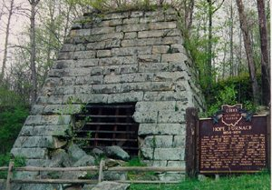
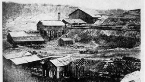

Hope Furnace

The Hope Furnace is located not far from Moonville, right beside Lake Hope. There was an entire iron works in operation here from 1854 to 1874, before the lake was created as part of Franklin Roosevelt's public works program in 1940.
Legend has it that a watchman fell into the molten iron, which couldn't have been a pleasant way to die. He is supposed to haunt the preserved brick furnace, still keeping watch, and is said to be visible on rainy nights as a silhouette against the ghostly fires of the furnace.

Back
Sources
Everett, Lawrence. Ghosts, Spirits, and Legends of Southeastern Ohio. Haverford, PA: Infinity Publishing, 2002. pp. 49-51.